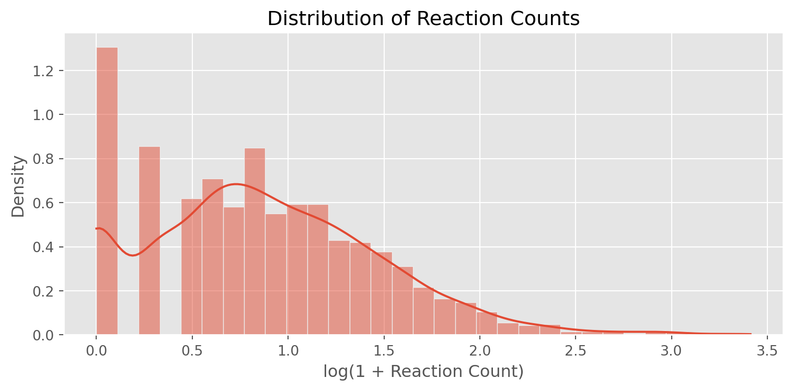
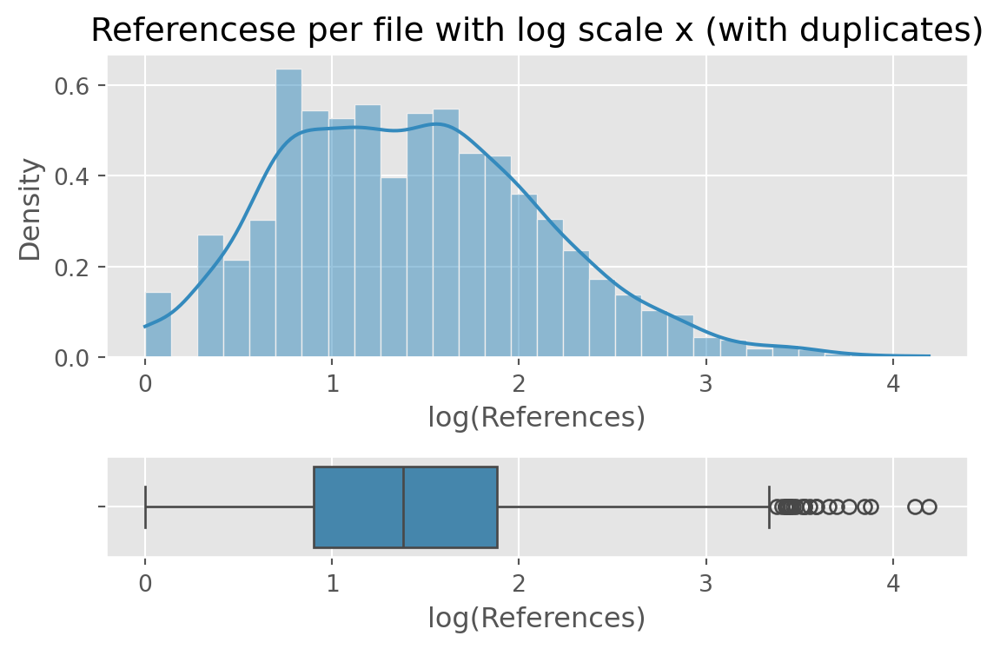
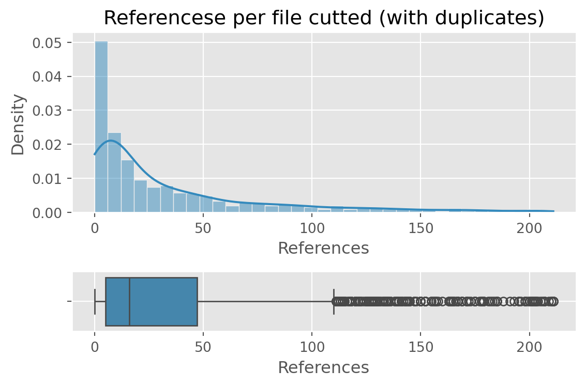
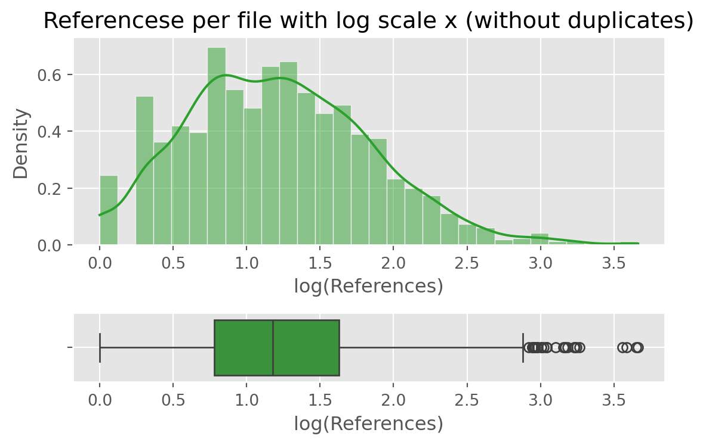
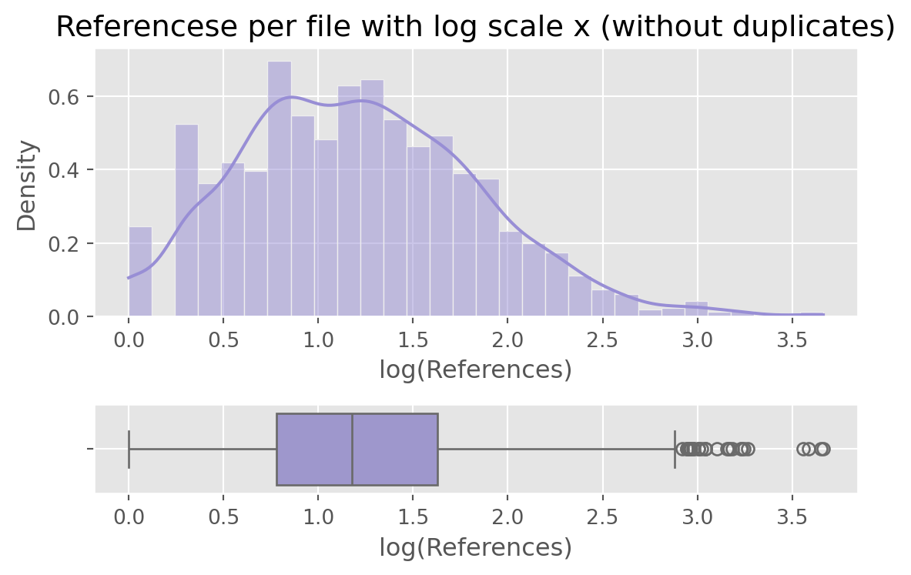
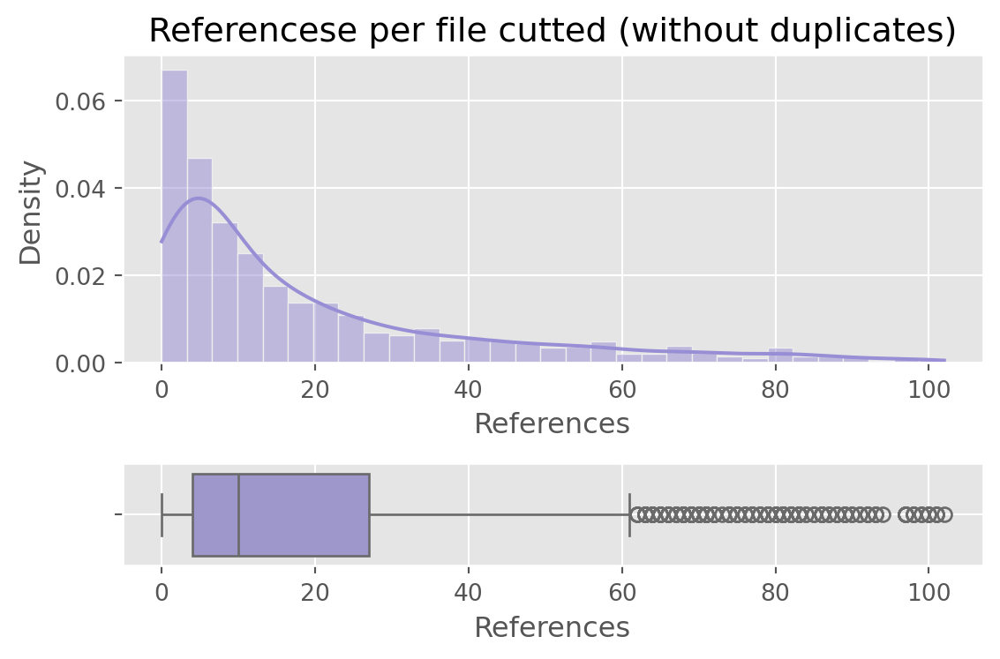

Code
# Read the big dataset
df = pd.read_parquet("./reactions.parquet")
df.nunique()file_id 2769
reaction_id 15357
original_notes 14802
notes 14799
only_references 10458
snippet 70334
dtype: int64How many unique vales among the variables?
# Read the big dataset
df = pd.read_parquet("./reactions.parquet")
df.nunique()file_id 2769
reaction_id 15357
original_notes 14802
notes 14799
only_references 10458
snippet 70334
dtype: int64# Read Reaction Count data
df_count = pd.read_parquet("./reaction_counts.parquet")
reaction_count = df_count['reaction_count']
# Summary statistics
plot_data(reaction_count, boxplot = True)
print_stats(reaction_count)
Descriptive Statistics:
Mean: 25.61
Median: 7.00
Standard Deviation: 108.05
Minimum: 1
Maximum: 2582
25th percentile (Q1): 3.00
75th percentile (Q3): 18.00
IQR (Interquartile Range): 15.00# Find the row with the maximum reaction count
max_idx = df_count['reaction_count'].idxmax()
max_row = df_count.loc[max_idx]
print(f"\nFile with Maximum Reaction Count: {max_row['file_id']}")
print(f"reaction_count: {max_row['reaction_count']}")
#R-HSA-162582.sbml
# Sort the DataFrame by reaction_count in descending order
sorted_df = df_count.sort_values(by='reaction_count', ascending=False)
# Print the top files
print("\nFiles sorted by reaction_count (descending):")
sorted_df.head(15)
File with Maximum Reaction Count: R-HSA-162582.sbml
reaction_count: 2582
Files sorted by reaction_count (descending):| file_id | reaction_count | |
|---|---|---|
| 2768 | R-HSA-162582.sbml | 2582 |
| 2767 | R-HSA-1430728.sbml | 2355 |
| 2761 | R-HSA-1643685.sbml | 1940 |
| 2765 | R-HSA-168256.sbml | 1737 |
| 2227 | R-HSA-74160.sbml | 1141 |
| 2093 | R-HSA-5663205.sbml | 999 |
| 2313 | R-HSA-556833.sbml | 994 |
| 1608 | R-HSA-1266738.sbml | 956 |
| 2760 | R-HSA-73857.sbml | 940 |
| 2759 | R-HSA-392499.sbml | 891 |
| 1770 | R-HSA-212436.sbml | 879 |
| 1219 | R-HSA-1280215.sbml | 791 |
| 2763 | R-HSA-9006934.sbml | 759 |
| 2766 | R-HSA-9824446.sbml | 753 |
| 2077 | R-HSA-168249.sbml | 744 |
Log10 transformation of the data
# Log-scaled data ---------------------------------
plot_data(reaction_count,
logscale_x = True,
outputname = "fig2.png",
boxplot = True,
xlabel= "Log10 Reactions")
perc = np.percentile(df_count['reaction_count'], 90)
df_filtered = df_count[df_count['reaction_count'] <= perc]
reaction_count_filtered = df_filtered['reaction_count']
plot_data(reaction_count_filtered, boxplot = True, outputname = "fig3.png")
print_stats(reaction_count_filtered)
Descriptive Statistics:
Mean: 9.29
Median: 6.00
Standard Deviation: 9.60
Minimum: 1
Maximum: 43
25th percentile (Q1): 2.00
75th percentile (Q3): 13.00
IQR (Interquartile Range): 11.00# Example:
'''(Duncan et al. 2002, Sundheim et al. 2006, Chen et al. 2010, Dango et al. 2011);
(Duncan et al. 2002, Sundheim et al. 2006)'''
# Apply extraction
df['parsed_references'] = df['only_references'].apply(extract_references)
# How many unique references in general
# How many references per file
# List of all ref
refs_list_per_file = df.groupby('file_id')['parsed_references'].apply(
lambda lists: [ref for refs in lists for ref in refs]
)
refs_per_file = refs_list_per_file.apply(lambda refs: len(refs))
# How many unique references per file
unique_refs_per_file = refs_list_per_file.apply(lambda refs: len(set(refs)))
df_refs_per_file = pd.DataFrame({
'file_id': refs_list_per_file.index,
'all_references': refs_list_per_file.values,
'total_references': refs_per_file.values,
'unique_references': unique_refs_per_file.values
})
df_refs_per_file.head(10)
print(f"\nFirst reference:\n{df_refs_per_file['all_references'].iloc[0]}")
print(f"\nTotal number of references in all files (with duplicates): {sum(df_refs_per_file.total_references.values)}")
print(f"Total number of unique references across all files: {sum(df_refs_per_file.unique_references.values)}")
plot_data(data = df_refs_per_file['total_references'],
outputname = "fig4.png",
title = "References per file (with duplicates)",
xlabel = "References",
color = ggplot_colors[1],
boxplot = True
)
plot_data(data = df_refs_per_file['total_references'],
outputname = "fig5.png",
title = "Referencese per file with log scale x (with duplicates)",
xlabel = "log(References)",
color = ggplot_colors[1],
boxplot = True,
logscale_x = True
)
plot_data(data = df_refs_per_file['total_references'],
outputname = "fig6.png",
title = "Referencese per file cutted (with duplicates)",
xlabel = "References",
color = ggplot_colors[1],
boxplot = True,
cut_percentile=(0,90)
)
print_stats(df_refs_per_file['total_references'])
plot_data(data = df_refs_per_file['unique_references'],
outputname = "fig7.png",
title = "References per file (without duplicates)",
xlabel = "References",
color = ggplot_colors[2],
boxplot = True
)
plot_data(data = df_refs_per_file['unique_references'],
outputname = "fig8.png",
title = "Referencese per file with log scale x (without duplicates)",
xlabel = "log(References)",
color = ggplot_colors[2],
boxplot = True,
logscale_x = True
)
plot_data(data = df_refs_per_file['unique_references'],
outputname = "fig9.png",
title = "Referencese per file cutted (without duplicates)",
xlabel = "References",
color = ggplot_colors[2],
boxplot = True,
cut_percentile=(0,90)
)
First reference:
['Schmitz et al. 2000', 'Lehmann et al. 2003', 'Hilton et al. 1998', 'Narazaki et al. 1998', 'Yasukawa et al. 1999', 'Nicholson et al. 1999', 'Greenhalgh and Hilton 2001', 'Croker et al. 2003', 'Rose-John et al. 2006', 'Jostock et al. 2001', 'Gerhartz et al. 1996', 'Hemmann et al. 1996', 'Wen and Darnell 1997', 'Shen et al. 2004', 'Jain et al. 1999', 'Jain et al. 1999', 'Abe et al. 2001', 'Chung et al. 1997', 'Decker and Kovarik 2000', 'Reich 2009', 'Scheller and Rose-John 2006', 'Grotzinger et al. 1999', 'Boulanger et al. 2003', 'Boulanger et al. 2003', 'Skiniotis et al. 2005', 'Suthaus et al. 2010', 'Riech and Liu 2006', 'Schaper et al. 1998', 'Lehmann et al. 2003', 'Fischer', '2004', 'Schaper et al. 1998', 'Fukada et al. 1996', 'Kim and Baumann 1999', 'Dance et al. 2008', 'Takahashi-Tezuka et al. 1998', 'Eulenfeld and Schaper 2009', 'Zhang et al. 1995', 'Reich and Liu 2006', 'Wang and Fuller 1994', 'Reich and Liu 2006', 'Stahl et al. 1995', 'Gerhartz et al. 1996', 'Schaper et al. 1998', 'Lehmann et al. 2003', 'Fischer', '2004', 'Schaper et al', '1998', 'Lu et al. 2001', 'Symes et al. 1997', 'Kim and Baumann', '1999', 'Tanaka et al. 2008', 'Stahl et al. 1994', 'Narazaki et al. 1994', 'Haan et al. 2000', 'Heinrich et al. 2003', 'Haan et al. 2001', 'Hilkens et al. 2001', 'Guschin et al. 1995', 'Guschin et al. 1995', 'Rodig et al. 1998', 'Haan et al. 2008', 'Lindauer et al. 2001', 'Liu et al. 1997', 'Velazquez et al. 1995', 'Oakes et al. 1996', 'Haan et al. 2002', 'Rose-John et al. 2006', 'Akira et al. 1994', 'Zhong et al. 1994', 'Hemmann et al. 1996', 'Kaptein et al. 1996', 'Shuai et al. 1994', 'Zhong et al. 1994', 'Kaur et al. 2020', 'Choy et al. 2002', 'Heo 2020', 'Rosso et al. 2020', 'Duchow and Bellmann-Strobl 2021', 'Xu et al. 2020', 'Strand et al. 2020', 'Xu et al. 2020', 'Sarhan et al. 2021', 'Khan et al. 2021', 'Hornby et al. 2021', 'Luo et al. 2020', 'Zhang et al. 2020a']
Total number of references in all files (with duplicates): 330135
Total number of unique references across all files: 147741/usr/local/lib/python3.10/dist-packages/pandas/core/arraylike.py:399: RuntimeWarning: divide by zero encountered in log10
result = getattr(ufunc, method)(*inputs, **kwargs)

Descriptive Statistics:
Mean: 119.23
Median: 20.00
Standard Deviation: 547.74
Minimum: 0
Maximum: 15558
25th percentile (Q1): 6.00
75th percentile (Q3): 71.00
IQR (Interquartile Range): 65.00
/usr/local/lib/python3.10/dist-packages/pandas/core/arraylike.py:399: RuntimeWarning: divide by zero encountered in log10
result = getattr(ufunc, method)(*inputs, **kwargs)
